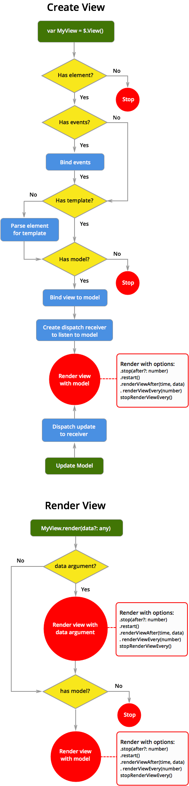

Docs
Everything You Need to Know
Views
API

View
View Lifecycle
The following diagram illustrates the lifecycle of a view from instantiation to rendering. After instantiation, a view can be rendered by a change to the model it is bound to or directly by the render function on the view instance.

$.View(options)
Views can be initialized with the following options:
- element: The element that the view will use as a temlate parent. The template will be rendered inside of this element.
- template: a template to use. This can must be a string. You could use $(selector).text() to get a template.
- model: a model. This will bind the view to the designated model.
- controller: This tells the view which controller to use.
- name: Used to identify a view. This should be the same as the variable you use to initialize the view. This will be exposed by
getViewName(). - variable:A name to use inside your templates to refer to the data being consumed. By default Truck uses
data. Providing a variable allows you to use a term that makes sense for the data you template is consuming. - events: This is an array of events to bind to a view. You can target the parent element by leaving out the `element` property or using `self` as the value for `element`. Otherwise, you can create a delegated event on the template's descendants by providing a selector for the intended target:
var myView = $.View({ element: '#arrayTemplate1', model: MyModel, startIndexFrom: 10, escapeHTML: true, variable: 'stuff' events: [{ element: 'li', startIndexFrom: 10, event: 'singletap', callback: function() { console.log($(this).text()); } }] }); - noTemplate: If set to true, the view will be created without trying to extract a template from the element. This allows you to create a view purely for non-data purposes, such as binding events. A template can be applied later using
setTemplate(). - startIndexFrom: This tells Truck where to start a template's index from. If you are using
$.view.indexin your template to output sequential numbers, the numbers will start with the value provided here. - escapeHTML: If set to `true`, the template will escape all HTML. This is useful to prevent unintentional tag or script injection. By default Truck renders the data with tags. If you wish, you can use
$.escapeHTML()inside a specific template delimiter to escape data for a particular instance.
render
render(data, append)
The render method will render a template. If it is bound to a model, it will render the view's template with that model:
// Render a view: myView.render();
Or you can render a view with raw JavaScript data:
// Render a view: myView.render(myData);
When rendering a view, the current content is replaced with the data available at render time. You can choose to have the render append the its content to the current content of the view. If you wish to append content to a view that uses a collection, make sure the content you're rendering is new, otherwise you'll have unnecessary duplicates.
To append content to a rendered view, add the keyword true as the last argument:
// Append to a view: myView.render(myData, true);
empty
empty()
Running this method on a view will remove all rendered content from the parent element.
// Empty a view: myView.empty();
resetIndex
resetIndex()
This will reset the index ($.view.index) used by a template to 1. That means, if you had set it to start from 10, running this will set it to start from 1.
// Reset a view's index value: myView.resetIndex();
startIndexFrom
startIndexFrom(number)
Setting this value tells the view at what number to start when rendering $.view.index in a repeating template.
// Set a view's index start value: myView.startIndexFrom(10);
getTemplate
getTemplate()
This will return a string of the template currently being used. This is the unparsed version of the template.
// Get the template a view is using: var template = myView.getTemplate();
setTemplate
setTemplate(template)
You can use this to change the template that a view is using. It expects a string, unparsed template.
Using this with myView.setModel(newModel) allows you to totally change what the view is rendering to the screen.
// Set a view's template: myView.setTemplate(newTemplate);
getModel
getModel()
Find out which model the view is currently bound to. If it is not bound to a model, it will return undefined.
// Reset a view's index value: myView.resetIndex();
setModel
setModel(model)
This method allows you to change the model a view is bound to. When you change the model a view is bound to, the view will immediately re-render its template with the new model. Please make sure that when you change a view's model, its data has parts that match the view's template, otherwise you can also change a view's template using myView.setTemplate(myTemplate)
// Set the model for a view: myView.setModel(newModel);
getMediator
getMediator()
Find out if the view has a mediator associated with it. If it does not, it will return undefined.
// Get the view's mediator: var myMtor = myView.getMediator();
isRendered
isRendered()
Use this method to find out if the view has rendered its template to the screen. This returns a boolean true/false.
// Check if the view is rendered: var myViewIsRendered = myView.isRendered();
isEmpty
isEmpty()
This method returns a boolean true/false depending on whether the element has any content or not.
// Check if a view is empty: var myViewIsEmpty = myView.isEmpty();
getElement
getElement()
This method allows you to find out what parent element the view is attached to.
// Get the element a view is attached to: var parentElement = myView.getElement();
setElement
setElement(element)
This method allows you to change the element a view is anchored to. If you change the parent, the new element will have its content deleted. If you intend to change the parent element that a view uses, make sure that the view has the template you want and some data so that you can render it immediately.
When you change the parent element that a view is using, Truck rebinds any events you have in your view. If you want different events you need to change those using the addEvent method.
// Set the parent element for the view:
myView.setElement('#newParent');
myView.render(someData);
To change the events after setting a new parent element, first unbind its events, then add the new ones:
// Set the parent element for the view:
myView.setElement('#newParent');
myView.off();
myView.addEvent({
element: 'li',
event: 'tap',
callback: function() {
console.log($(this).text());
}
});
myView.render(someData);
bind
bind(model)
This method binds a view to a model. When it does so, it immediately re-renders the view with the model's data. Use this if you are binding a model for the first time. If you want to change a view's model, use setModel().
// Bind the view to a model: myView.bind(newModel);
unbind
unbind()
Use this method to unbind a model from a view. Provide the name of the model to unbind. After unbinding, the current rendered state of the view's template will remain unchanged.
// Unbind a view from its model: myView.unbind(myModel);
addEvent
addEvent(events, replace)
This method allows you to add events to a view. The method expects an object or array. The object should have at least two properties:
// Add an event to the view:
myView.addEvent({
event: 'tap',
callback: function() {
console.log($(this).text());
}
});
You can replace all events with the provided event by passing a true value after the events. By default events are add to whatever is already there:
// Add an event to the view,
// replacing any events already registered:
myView.addEvent({
event: 'tap',
callback: function() {
console.log($(this).text());
}
}, /* Replace events */ true);
You can also add a third property for a delegated element event. This element should be a descendent of the parent element:
// Add a delegate event to the view:
myView.addEvent({
element: 'li',
event: 'tap',
callback: function() {
console.log($(this).text());
}
});
You can also pass the method an array of these object to initialze multiple events at once:
// Add two events to a view:
myView.addEvent([
{
element: 'li',
event: 'tap',
callback: function() {
console.log($(this).text());
}
},
{
element: 'p',
event: 'doubletap',
callback: function() {
console.log($(this).text());
}
}]);
off
off(event, element, callback)
Remove an event or all events from a view. If no argument is passed, all events are removed. Otherwise you can pass the following parameters to remove a specific event: event, element, callback
// Remove all events from a view:
myView.off();
// Remove a tap event from the view:
myView.off('tap', '#element')
stop
stop(after)
This method allows you to tell a view to stop rendering. From the moment you run this method, the view will no longer render its template, regardless whether it is bound to a model that changes, or you try to render it with raw JavaScript data.
You can also provide a number indicating how many times you want the view to render, after which is will stop.
Using the method restart(), you can tell a view to start rendering its template again(see below).
// Stop the view from rendering immediately: myView.stop(); // Tell the view to stop after rendering 10 times: myView.stop(10);
isStopped
isStopped()
Find out if a view has been stopped or not. This method returns a boolean true/false.
// Check if the view is stopped: myView.isStopped();
restart
restart(item)
This method allows you to restart a stopped view. If no parameters are provided, the view is restarted immediately. You can also provide a number representing second. This will tell the view to start rendering again after than amount of time has passed.
// Restart a view immediately: myView.restart(); // Tell a view to restart in 6 minutes: myView.restart(60*6);
getRestartTime
getRestartTime()
This method lets you find out if the view has a restart time set. If it does not, it will return undefined.
// Get a view's restart time: var restartTime = myView.getRestartTime();
renderViewAfter
renderViewAfter(time, data)
Like restart with seconds value, this method allows you to tell a view to render after the provided time. A view does not need to be stopped for this. The method takes two arguments, the time in seconds to wait before rendering, and some optional data. If the view is bound to a model, no data needs to be provided. It will use the model's data. Otherwise, you can pass some data for the view to use when it does render.
// Render the view after 10 minutes (use it's model): myView.renderViewAfter(60*10); // Render the view after 10 minutes with data: myView.renderViewAfter(60*10, myData);
renderViewEvery
renderViewEvery(time, callback)
This method tells the view to render regularly at the provided time interval. You would use this when you want a template to render at a regular cycle, regardless of what is happening with its model. If a view's model has not changed since the last rendering, this cycle will be skipped, meaning the View will not render.
// Render the veiw every 5 minutes: myView.renderViewEvery(60*5);
stopRenderViewEvery
stopRenderViewEvery()
This method allows you to stop a view that was set to render at regular intervals with renderViewEvery described above.
// Break a view out of a render cycle: myView.stopRenderViewEvery();
getLastRenderTime
getLastRenderTime()
This method lets you find out the last time that a view rendered its template.
// Get the last time a View rendered: var renderTime = myView.getLastRenderTime();
getViewName
getViewName()
Find out the name you used when you set up a view. If you did not provide a name, this will return undefined. Below is an example of initializing a view with a name:
var myView = $.View({
element: '#element',
name: 'myView',
model: myModels
});
You should make sure that if you do set this, that the name you provide is the same as the variable you assign the view to. This value gets pushed to $.RegisteredViews, which serves as a central reference to all registered views in your app. This can be helpful to keep track of all your views. Other than that, it has no other functionality. You can examine the contents of $.RegesteredViews. It's just an array of view names.
// Get the name of the view: var viewName = myView.getViewName();
defineHelper
defineHelper(callback)
This method lets you define helpers to use inside of a view's template. It expects an object in the following format:
// Define a helper to capitalize the last name:
$.defineHelper({
bigName: function(data) {
return data.lastName.toUpperCase();
}
});
With a helper defined, you can then use it in a template like this:
<ul class="list cloak" id="basicRepeater">
<!-- Use the helper to output the last name in uppercase -->
<li>${ data.firstName }, ${ $.helpers.bigName(data) }</li>
</ul>
escapeHTML
escapeHTML(true)
This methods lets you tell a view to escape any HTML tags in the data it is rendering. It takes a boolean true to escape the markup, otherwise it renders the data as is. Setting a view to escape data helps prevent malicious code injection in your document.
// Tell a view to escape any markup in the data: myView.escapeHTML(true);
isEscapingHTML
isEscapingHTML()
Find out if a view is escaping its data or not. This returns a boolean true/false.
// Find out if the view is escaping markup: var isSafeOutput = myView.isEscapingHTML();
getRenderCount
getRenderCount()
This method returns the number of times the view rendered its template since the app loaded.
// Find out how many times the view rendered: myView.getRenderCount();